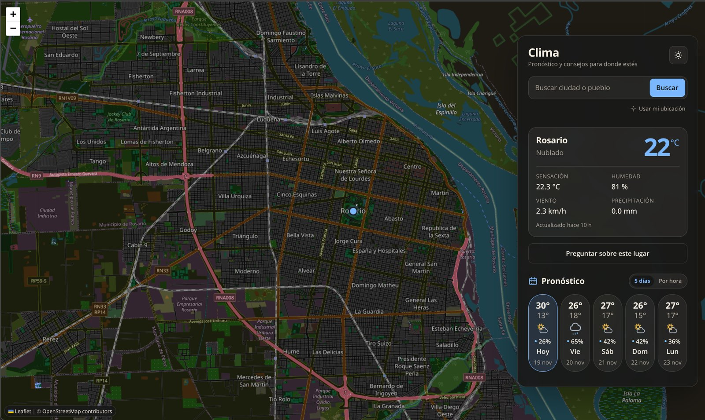

Map-first experience
Pick a point on the map, search for a city or town, or use the browser location. The pin follows the exact click while weather is queried by a ~1 km cell to reuse cache.
// case study
Interactive weather dashboard built with vanilla JavaScript and a full-screen map. Pick a location, search for a city, or use your location to get current conditions, a 5-day and 24-hour forecast, and an AI chat.
 JavaScript
JavaScript
 HTML
CSS
HTML
CSS
 Leaflet
Leaflet
 Playwright
Playwright

I built this project to practice the full cycle of a frontend app: API consumption, maps, loading and error states, responsive design, SSE streaming, and self-hosted deployment.
It is the frontend of a three-repo weather stack. Weather API normalizes and caches the data, Weather Assistant generates deterministic advice and LLM chat responses, and this dashboard brings both together in a map-first interface.
Pick a point on the map, search for a city or town, or use the browser location. The pin follows the exact click while weather is queried by a ~1 km cell to reuse cache.
Temperature, feels like, humidity, wind, precipitation, and the time of the last update, with clear loading and error states.
Daily ranges, icons, rain probability, and an hourly view for the next hours.
Light and dark themes, keyboard navigation, and a mobile bottom sheet that can be collapsed to keep the weather visible.
Ask about umbrellas, clothing, or activities. It streams responses via SSE and saves conversations on the map points.
Retry the last request, clear HTTP error messages (404, 422, 429, 502, 504), and queries rounded to ~1 km to share cache.
JavaScript
HTML
CSS
ES Modules
Leaflet
 OpenStreetMap
Playwright
OpenStreetMap
Playwright
 Coolify
Coolify
 Cloudflare
Cloudflare
Finished and running in production.
Live on my self-hosted homelab.